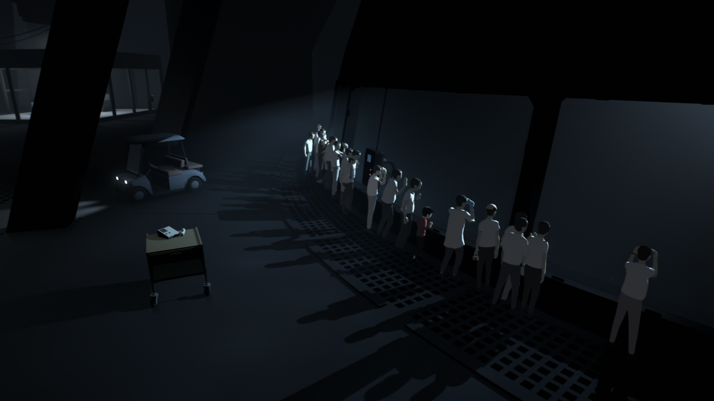

Inside é um jogo eletrônico do estilo "puzzle" em plataforma repleto de artes visuais modernas, as vezes macabras, de uma história subjetiva que deve ser interpretada pelo jogador. Desenvolvido pela empresa indie Playdead, INSIDE é o segundo jogo da desenvolvedora, sendo o primeiro o aclamado LIMBO. A Playdead é altamente elogiada pelos maravilhosos jogos que fizeram, inclusive é um dos jogos favoritos do criador deste site, e ele recomenda muito que você, leitor, jogue esta obra prima chamada INSIDE.